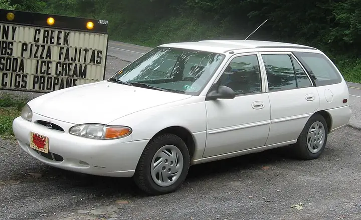
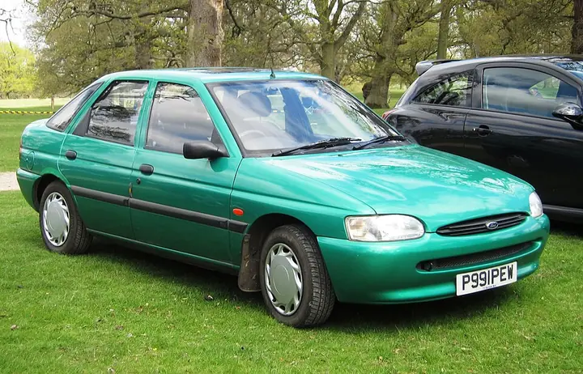
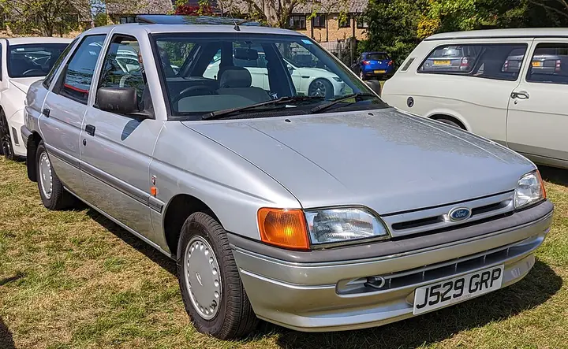
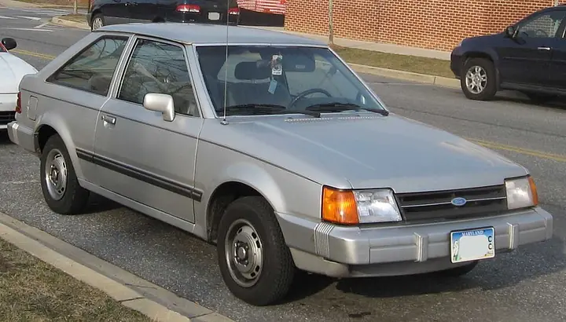
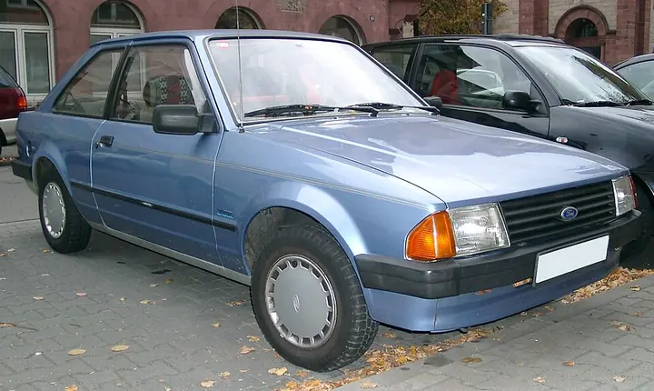
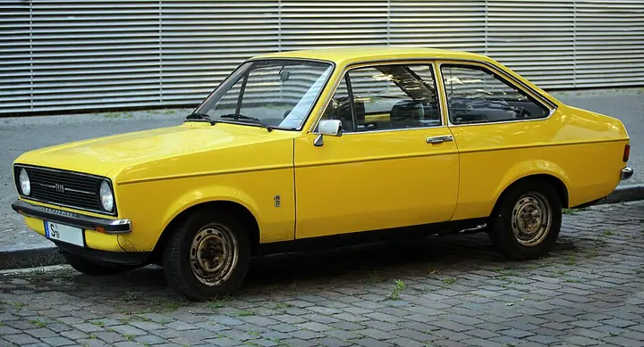
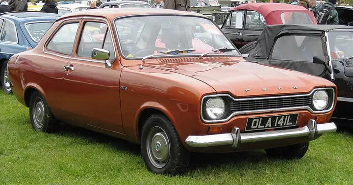

Ford Escort
Ford Escort (China) · 2015–2023
Abstract
This generation of the Ford Escort is a compact car, built 2015–2023 (China) in China: Chongqing (Changan Ford), Taiwan: Taoyuan (Ford Lio Ho). Body styles: 4-door sedan. Layout: Front-engine, front-wheel-drive. Designed by Andrew Collinson (Exterior Design Manager), Kartik Ramanathan (Vehicle Engineering Manager), Emily Lai (Color + Materials Design Manager).

1Specifications
| Production | 2015–2023 (China)2017–2020 (Taiwan) |
|---|---|
| Assembly | China: Chongqing (Changan Ford)Taiwan: Taoyuan (Ford Lio Ho) |
| Designer | Andrew Collinson (Exterior Design Manager)Kartik Ramanathan (Vehicle Engineering Manager)Emily Lai (Color + Materials Design Manager) |
| Class | Compact car |
| Body style | 4-door sedan |
| Layout | Front-engine, front-wheel-drive |
| Engine | 1.5 L Ti-VCT I4 |
| Transmission | 5 speed manual6 speed automatic |
| Wheelbase | 2687 mm |
| Length | 4587 mm |
| Width | 1825 mm |
| Height | 1490 mm |
| Weight | 1255–1300 kg |
| Related | Ford Focus |
| Predecessor | Ford Focus Classic (China)Ford Fiesta (sedan, Taiwan) |
2Versions
- 2018 facelift
- 2021 facelift
3Previous generations












,_front_left_side.jpg){kind=link}


4Generation by generation
Length +13% from the first to the last
1967 19674,045 mm
1974 19743,975 mm
1980 19803,907 mm
1981–1990 19804,303 mm
1986 19864,022 mm
1990 19904,036 mm
1991–1996 19904,318 mm
1995 19954,136 mm
1997–2003 19964,387 mm
Ford Escort (China) 20154,587 mm
Weight +64% from the first to the last
1967 1967767 kg
1974 1974880 kg
1981–1990 19801,017 kg
1990 1990900 kg
1991–1996 19901,068 kg
1995 1995989 kg
1997–2003 19961,119 kg
Ford Escort (China) 20151,255 kg